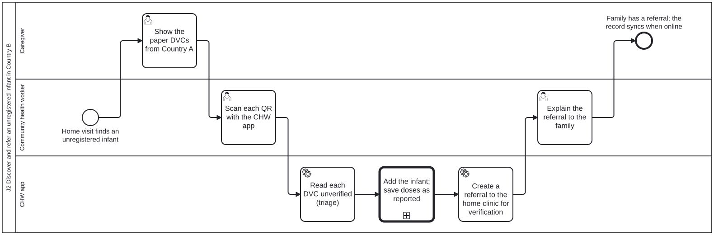
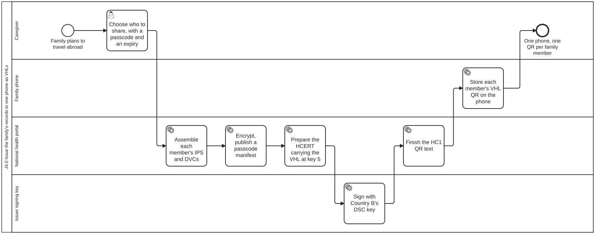
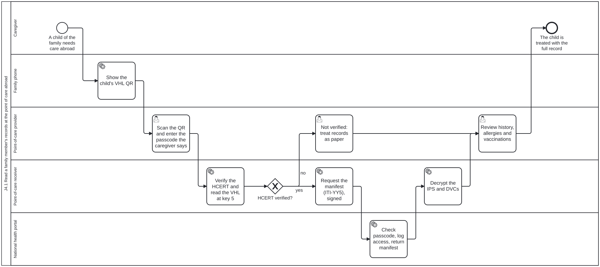

旅程地图
横向阅读可跟随一个人物。纵向阅读可看到所有人在同一时刻的情况。点击某一列可查看详情。
出生，并在几小时内接种乙肝（Hep B）和 BCG 出生剂次。
“两针小小的疫苗，还有一份会跟着他的记录。”
被加入他的家庭：奥内萨卫生系统现在知道他的存在了。
“三周大了，现在他才算数。”
回到凯萨罗时他发烧了，接诊的正是在他出生时为他接种疫苗的医生。
“陌生的房间，但没有人需要猜他打过什么疫苗。”
在异国分娩，出院时领到两张纸质卡片。
“家乡会有人相信这些纸吗？”
向 Vilay 讲述在泰法费基分娩的经过，并出示卡片。
“希望我们不会因为在国外生孩子而惹上麻烦。”
收到前往区卫生中心的转诊。
“又要跑一趟——不过至少他们现在知道他打过哪些疫苗了。”
带 Somsak 来进行转诊就诊。
“他们相信泰法费基的纸质记录！”
带着 Somsak 下一次接种的日期离开。
“现在我确切知道什么时候该回来了。”
她本人和婴儿的记录都依赖 Bounmy 的手机。
“记录在他的手机上。如果我不跟他一起出行怎么办？”
看着医生看到自出生以来发生的一切。
“一切都跟着他。”
以户主身份确认家庭信息。
“很好，他现在在我们的家庭记录里了。”
打开家庭钱包：有他本人、Khamla 和 Somsak 的档案。
“一部手机，三个人——我能管好我们所有人。”
为 Somsak 创建一个受通行码保护的 QR 码链接，有效期 14 天。
“由我决定谁能看到，以及能看多久。”
在手机上出示 QR 码，并大声说出通行码。
“这次不用带一沓纸了。”
扫描两张 QR 码卡片并读取剂次，但不核查其签名。
“我能读出来，但在这里我证明不了它是真的。”
将 Somsak 加入 Sengmany 家庭，把两剂次保存为未验证，并预约诊所转诊。
“几周都没有信号——但我今天就得给他登记。”
扫描卡片；平板电脑确认泰法费基签名，并将剂次标记为已验证。
“一个绿色对勾——我可以信任一家从没听说过的医院。”
Confirms the Taifafeki product equals the Onesan birth dose; gives the overdue 6-week vaccines.
“名字不同，疫苗相同——这个判断我可以做。”
接种乙肝（Hep B）和 BCG 出生剂次，并打印两张已签名的 QR 码疫苗卡片。
“他不是泰法费基人，但他仍然需要一份能带回家的记录。”
扫描 QR 码，输入 Bounmy 告诉他的通行码，看到全部六剂次。
“在这里出生，在那里接种——而我能看到全部。”
2 张已签名的纸质卡片（Hep B、BCG）
存放于：Khamla 的包里已从 2 张卡片读取剂次；尚未保存任何内容
存放于：纸质卡片 + CHW 手机婴儿已登记；2 剂次保存为“由家人报告”
存放于：CHW 手机（等待同步）剂次已验证；泰法费基被记录为来源
存放于：区诊所记录出生剂次计入；已预约下次就诊
存放于：奥内萨国家健康记录12 个月摘要：2 剂泰法费基剂次 + 4 剂奥内萨剂次
存放于：奥内萨国家记录 + 家庭钱包已创建可共享的链接；数据留在奥内萨
存放于：奥内萨国家记录（QR 码只是一个指针）在泰法费基查看，从不复制；访问记录在奥内萨
存放于：奥内萨国家记录婴儿没有泰法费基身份证号，因此他的记录通常会被锁在泰法费基医院的系统里。
如果不加核查，一张伪造或录错的卡片可能会悄无声息地变成正式记录。
在境外出生的婴儿在民事登记跟上之前，对本国卫生系统而言是不可见的——有时要等上几个月。
临床医生要么不信任外国纸质记录而重新接种，要么盲目信任。
各国对疫苗的命名和包装各不相同，因此剂次会被遗漏或重复。
许多家庭共用一部智能手机；“一人一个应用”的设计把他们排除在外。
发送记录的照片或 PDF 会泄露数据，且接收方无法验证。
没有接种史，医生就会重复接种或只能猜测。
一张经数字签名的 QR 码卡片随家人同行——无需身份证号，也无需查询数据库。
手机离线读取卡片，并将“家人告诉我们的”与“我们已验证的”明确区分开。
离线表单立即将婴儿关联到其家庭；手机一旦有信号便会同步。
泰法费基的签名密钥在共享的 WHO 信任列表上，因此任何诊所都可以在本地核验。
保留泰法费基的原始代码，并在其旁边添加奥内萨代码；接种计划引擎计算出到期的剂次。
一部手机上的家庭钱包，每个人都有单独的健康摘要。
可验证健康链接：QR 码只包含一个加锁的指针；在提供通行码之前，数据留在本国。
记录从奥内萨实时获取，只查看而不复制，访问日志会发回本国。
泰法费基医院 → 家庭（纸质）
打印的 QR 码离线纸质卡片 → CHW 手机
相机扫描离线Khamla（口述）+ 已解码的卡片 → CHW 手机 → 国家服务器（同步时）
离线表单（FHIR Questionnaire），随后通过 Info Gateway 同步离线纸质卡片 → 诊所平板电脑
相机扫描 + 本地信任列表检查离线诊所平板电脑 → 奥内萨国家 FHIR 服务器
通过 Info Gateway 的 FHIR API在线奥内萨国家 FHIR 服务器 → 家庭钱包
通过 Info Gateway 的 FHIR API（HTTPS）在线家庭钱包 → 奥内萨国家服务器
HTTPS在线奥内萨国家服务器 → 泰法费基诊所查看器
跨境 HTTPS（VHL 获取）在线两张纸质卡片随 Khamla 回家
已读取但未核查的剂次进入登记
转诊至区卫生中心
已验证的剂次，可纳入接种计划
Somsak 在接下来的一年里继续按奥内萨接种计划接种
Somsak 的摘要已可共享
爸爸手机上的一个 QR 码 + 一个他可以口头说出的通行码
旅程完成——兜了一圈回到泰法费基
 J1 在 A 国签发新生儿出生剂次 DVCIG 中的流程实施指南（IG）中的用户场景BPMN
J1 在 A 国签发新生儿出生剂次 DVCIG 中的流程实施指南（IG）中的用户场景BPMN
J2 在 B 国发现并转诊未登记婴儿IG 中的流程实施指南（IG）中的用户场景BPMN J3 在所属诊所验证、导入并制定接种计划IG 中的流程实施指南（IG）中的用户场景BPMNJ3 在所属诊所验证、导入并制定接种计划IG 中的流程实施指南（IG）中的用户场景BPMN
J3 在所属诊所验证、导入并制定接种计划IG 中的流程实施指南（IG）中的用户场景BPMNJ3 在所属诊所验证、导入并制定接种计划IG 中的流程实施指南（IG）中的用户场景BPMN
J4.0 将家庭记录以 VHL 形式签发到同一部手机IG 中的流程实施指南（IG）中的用户场景BPMN
J4.1 在境外医疗服务点读取家庭成员的记录IG 中的流程实施指南（IG）中的用户场景BPMN一名奥内萨婴儿在泰法费基出生
Somsak 在泰法费基医院接种了出生疫苗——而能随他跨越国境的，只有两张纸质卡片。
一名卫生工作者找到了婴儿——并读取了他的卡片
在一次例行的村庄家访中，Vilay 发现了一个奥内萨系统并不知道其存在的新生儿。她能读出他卡片上的疫苗，却无法证明它们是真的。
在家中登记并转诊
在没有信号的情况下，Vilay 将 Somsak 加入他的家庭，把他的剂次保存为“已报告”，并将这家人转诊到诊所。
诊所确认卡片为真
Chanthason 护士扫描卡片，她的平板电脑对照 WHO 信任列表核查泰法费基的数字签名——无需联系泰法费基。
泰法费基疫苗被纳入奥内萨接种计划
泰法费基的 Hep B 产品与奥内萨接种计划中的任何条目都不匹配。Chanthason 作出临床判断，系统计算出下一步到期的剂次。
一部手机保存全家人的记录
一年后，这家人计划去泰法费基旅行。Bounmy 的手机保存着他们三人的记录，其中包括 Somsak 的六剂已验证剂次。
爸爸创建一个在诊所共享的链接
出行前，Bounmy 为 Somsak 的记录创建一个 QR 码链接，用 4 位通行码加锁，有效期 14 天（这是演示的设置：每个国家会自行设定）。记录本身留在奥内萨。
一位泰法费基医生看到完整的接种史
回到一切开始的地方，Anan 医生扫描链接，听取通行码，看到 Somsak 完整的第一年——而奥内萨会被告知是谁查看了记录。